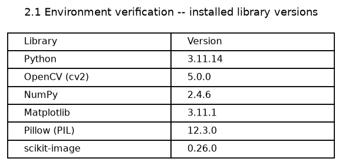
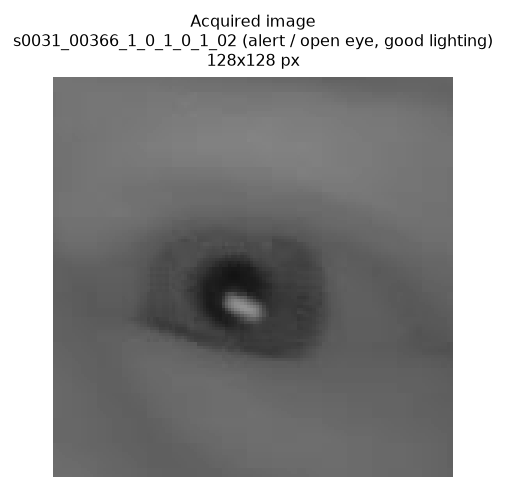
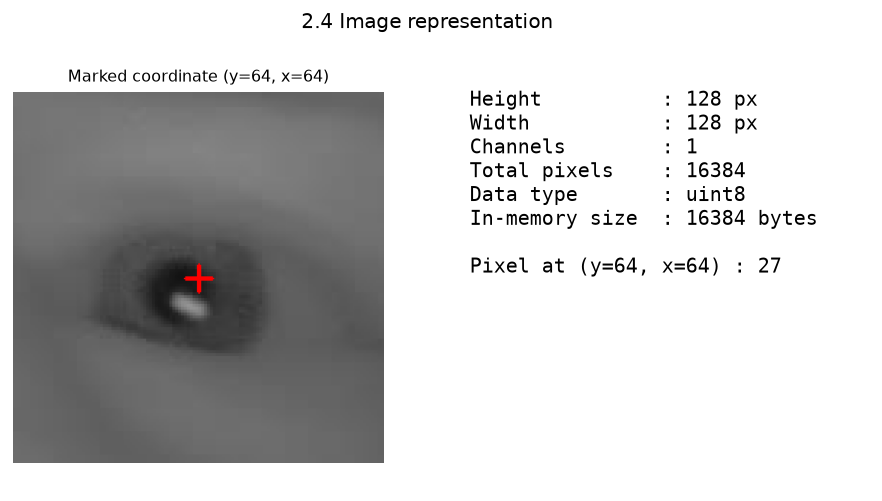
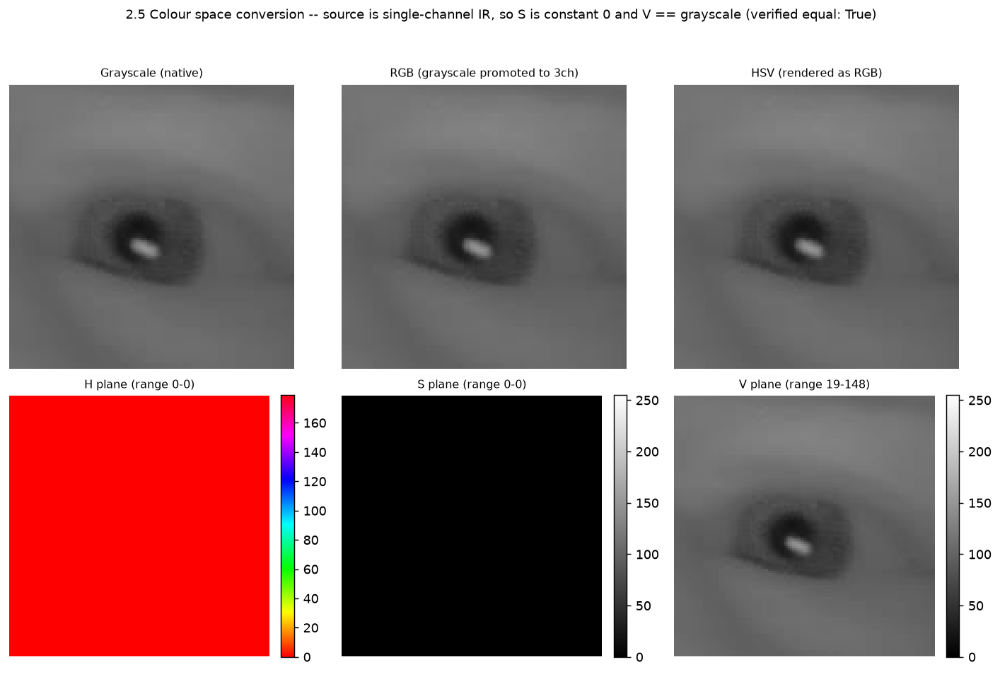
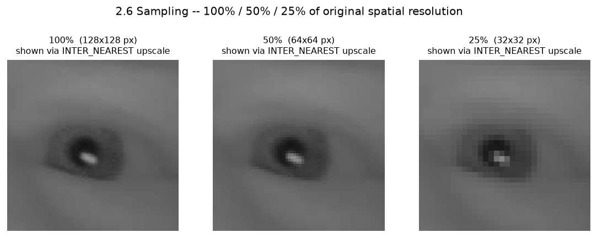
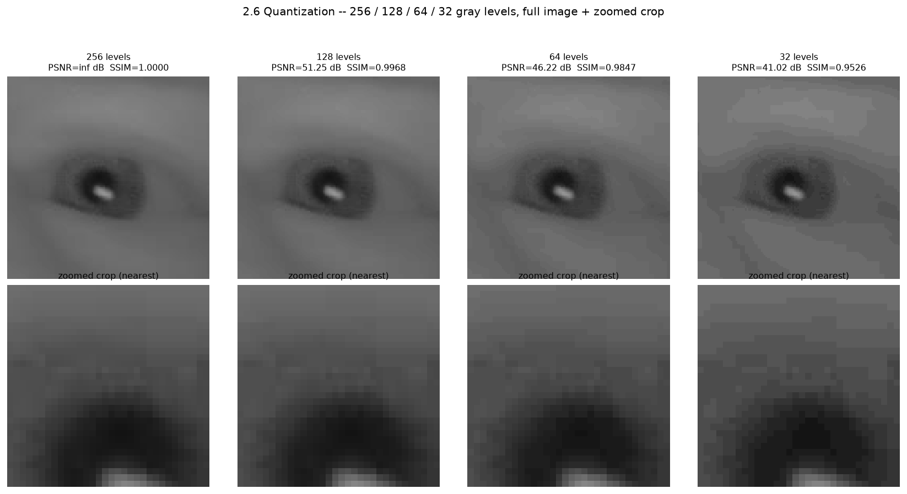
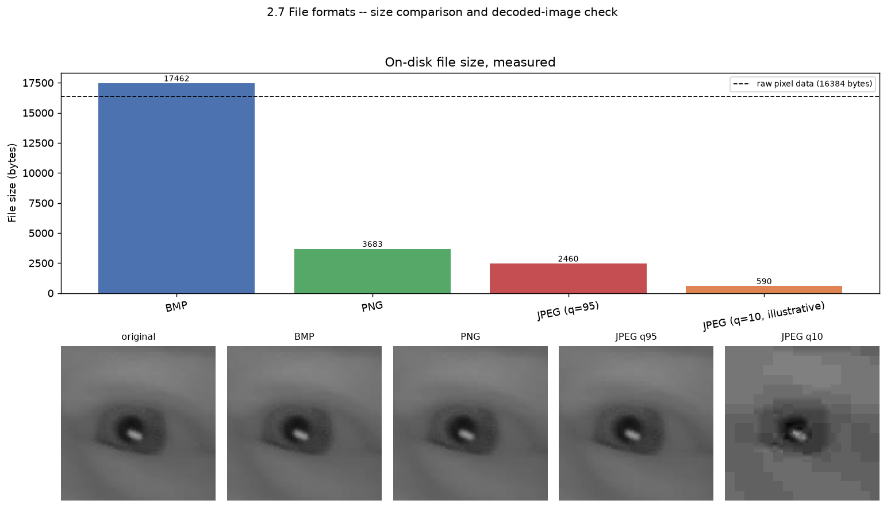

Image Acquisition, Representation, and Image Fundamentals
Aim
To set up and verify a Python-based digital image processing environment (OpenCV, NumPy,
Matplotlib, Pillow, scikit-image); to acquire, display and save an image from the
driver-drowsiness dataset; to examine its fundamental representation – dimensions,
channel count, data type, and the pixel value at a user-specified coordinate; to convert it
across Grayscale, RGB and HSV colour spaces and examine the conversion honestly for a
single-channel source; to study the effect of spatial sampling (resolution reduction) and
intensity quantization (gray-level reduction) on image quality using PSNR and SSIM; and to
save the image in BMP, PNG and JPEG formats and compare measured file size, compression
ratio, and reconstruction fidelity.
Dataset Used
A 40-image curated subset of the MRL Eye Dataset (VSB – Technical University of
Ostrava; Fusek, R., 2018), redistributed at data/samples/ for this coursework
– 20 open-eye frames in alert/ and 20 closed-eye frames in
drowsy/, all single-channel near-infrared eye crops, native resolution 60x60 to
172x172 px, metadata (subject/gender/glasses/eye-state/reflections/lighting/sensor per image)
in data/samples/manifest.csv. This experiment uses one canonical image
throughout – alert/s0031_00366_1_0_1_0_1_02.png (128x128 px, open eye, no
glasses, good lighting, sensor 02) – the same image used as the "good lighting" test
case in Tasks 3, 4, 6 and 7, kept identical here so this experiment's numbers are directly
comparable to the rest of the project rather than introducing an unexplained new sample.
Resources / Apparatus Required
Software: Python 3.11.14 • OpenCV (cv2) 5.0.0 • NumPy 2.4.6 •
Matplotlib 3.11.1 • Pillow (PIL) 12.3.0 • scikit-image 0.26.0 • VS Code /
terminal. No internet access or GPU required.
Algorithm
A. Environment Setup and Project Organization (2.1, 2.2)
Start the program.
Import cv2, numpy, matplotlib, PIL,
skimage – a failed import is itself a verification failure, not merely a
missing feature.
Read each module's __version__ attribute and print/tabulate it (this is an
explicit deliverable, not an incidental step).
Create outputs/ – a new top-level directory, separate from
results/, specifically for the raw image artifacts sub-task 2.3 and 2.7
require saving (as opposed to results/, which holds composite figures/plots).
Stop.
B. Image Acquisition (2.3)
Start the program.
Read the target image from data/samples/ with
cv2.imread(path, cv2.IMREAD_GRAYSCALE) into a NumPy uint8 array.
Display it with matplotlib.pyplot.imshow(img, cmap="gray").
Save the acquired array to outputs/task2_acquired_image.png with
cv2.imwrite.
Stop.
C. Image Representation (2.4)
Start the program.
From the loaded array's .shape, extract height and width (and channel count,
if the array is 3-D); compute total pixel count as height × width.
Read .dtype for the storage data type.
Accept a coordinate (y, x) as a parameter (function argument /
CLI flag, default = image centre) – never a value baked into the logic – validate
it against the image bounds, and index img[y, x] to read that pixel's value.
Print/plot height, width, channel count, total pixels, dtype, and the pixel value at the
given coordinate.
Stop.
D. Colour Space Conversion (2.5)
Start the program.
Take the grayscale array as the source of truth.
Promote it to 3 channels with cv2.cvtColor(gray, cv2.COLOR_GRAY2RGB) to
obtain an "RGB" view (R=G=B=gray at every pixel, since there is no colour information to
recover from a single-channel sensor).
Convert that RGB view to HSV with cv2.cvtColor(rgb, cv2.COLOR_RGB2HSV).
Split the HSV array into its H, S, V planes individually with cv2.split.
Display grayscale, RGB, composite HSV, and the H/S/V planes side by side; verify
numerically that V equals the original grayscale array and that S is uniformly 0.
Stop.
E. Sampling and Quantization (2.6)
Start the program.
Sampling: resize the image to 100%, 50% and 25% of its original width/height with
cv2.resize(..., interpolation=cv2.INTER_AREA) (area-weighted, correct for
shrinking).
For display, upscale each reduced sample back up with
interpolation=cv2.INTER_NEAREST only – never a smoothing interpolant –
so pixelation is shown honestly instead of being resampled away.
Quantization: for each target level count L in {256, 128, 64, 32}, bucket every
0-255 intensity into one of L equal-width bins and map it to that bin's midpoint.
Compute PSNR and SSIM of each quantized image against the original (unquantized) image.
Display a zoomed, INTER_NEAREST-upscaled crop of each quantized image (not
just the full frame) so intensity banding is visible at pixel level.
Stop.
F. File Formats (2.7)
Start the program.
Save the same source array with cv2.imwrite three times: as
.bmp (no compression parameters), .png (lossless,
IMWRITE_PNG_COMPRESSION=9), and .jpg
(IMWRITE_JPEG_QUALITY=95).
Measure each file's actual on-disk size in bytes with Path.stat().st_size
– not estimated or computed from the array.
Re-read each saved file back and compare it, pixel-for-pixel, against the original array
with np.array_equal (BMP, PNG) or PSNR/SSIM (JPEG).
Compute each format's compression ratio as raw pixel bytes (height × width ×
1 byte, since the source is single-channel) divided by the measured file size.
Stop.
Program code
Trimmed to the essential logic. Full module:
src/acquisition.py; figure/CSV generation driver:
scripts/make_task2_figures.py.
C. Representation (pixel coordinate is a parameter, not hardcoded)
def image_properties(img):
h, w = img.shape[:2]
channels = 1 if img.ndim == 2 else img.shape[2]
return {"height": h, "width": w, "channels": channels,
"total_pixels": h * w, "dtype": str(img.dtype),
"size_bytes": int(img.nbytes)}
def pixel_at(img, y: int, x: int): # (y, x) is a caller-supplied argument
h, w = img.shape[:2]
if not (0 <= y < h and 0 <= x < w):
raise IndexError(f"({y}, {x}) out of bounds for a {h}x{w} image")
return img[y, x]
D. Colour space conversion
def to_colour_spaces(img):
gray = img if img.ndim == 2 else cv2.cvtColor(img, cv2.COLOR_BGR2GRAY)
rgb = cv2.cvtColor(gray, cv2.COLOR_GRAY2RGB) # no colour info to add: R=G=B=gray
hsv = cv2.cvtColor(rgb, cv2.COLOR_RGB2HSV)
h, s, v = cv2.split(hsv)
return {"gray": gray, "rgb": rgb, "hsv": hsv, "h": h, "s": s, "v": v}
All figures below use the same source image, alert/s0031_00366_1_0_1_0_1_02.png
(128x128 px). Small crops/samples are upscaled for display with cv2.INTER_NEAREST
only, so pixelation/banding is shown honestly rather than smoothed away by a second
resampling step.
2.1 Environment verification

Figure 1: Installed library versions, read from each module's own
__version__ attribute (not from requirements.txt).
2.3 Image acquisition

Figure 2: Image read from data/samples/alert/ and saved to
outputs/task2_acquired_image.png.
2.4 Image representation

Figure 3: Dimensions, channel count, dtype, and the pixel value at a
user-specified (parameterized) coordinate, marked on the image.
Property
Value
Height
128 px
Width
128 px
Channels
1
Total pixels
16384
Data type
uint8
In-memory size
16384 bytes
Coordinate queried (y, x)
(64, 64) – default: image centre, overridable via --y/--x
Pixel value at (64, 64)
27
2.5 Colour space conversion

Figure 4: Grayscale, RGB (promoted) and HSV (composite), with the H, S, V planes
shown individually below.
Plane
Observed range
Note
Hue (H)
constant 0
Undefined/arbitrary when R=G=B; OpenCV reports 0.
Saturation (S)
constant 0
Zero saturation is the mathematical definition of "gray" (R=G=B).
Value (V)
19-148 (image-dependent)
Numerically identical to the source grayscale array (verified with np.array_equal: True).
2.6 Sampling

Figure 5: Spatial resampling to 100% (128x128), 50% (64x64) and 25% (32x32),
each upscaled for display with INTER_NEAREST so pixelation is visible.
2.6 Quantization

Figure 6: Intensity quantization to 256/128/64/32 gray levels – full frame
(top) and a zoomed, nearest-upscaled 32x32 crop spanning the iris/sclera boundary
(bottom), where banding is easiest to see.
Gray levels
Bits/pixel
PSNR vs. original
SSIM vs. original
Distinct values used
256
8.00
∞ (lossless)
1.0000
125
128
7.00
51.25 dB
0.9968
66
64
6.00
46.22 dB
0.9847
34
32
5.00
41.02 dB
0.9526
17
Row highlighted: 32 levels is where visible false contouring first appears in
the zoomed crop (Figure 6) on this image – see Observations.
2.7 File formats

Figure 7: Measured on-disk file size (BMP / PNG / JPEG q=95 / JPEG q=10
illustrative) against the raw pixel byte count, plus the decoded image from each file.
Format
File size (bytes)
Compression ratio (raw/file)
PSNR vs. original
SSIM vs. original
Bit-identical to original?
Raw pixel data (reference)
16384
1.00
–
–
–
BMP
17462
0.94
∞
1.0000
Yes
PNG
3683
4.45
∞
1.0000
Yes
JPEG (q=95)
2460
6.66
52.30 dB
0.9957
No
JPEG (q=10, illustrative)
590
27.77
36.18 dB
0.9055
No
Observations
2.1/2.2 Environment and organization. All 5 required libraries (plus Python itself)
imported and reported a version with no errors (Figure 1) – OpenCV 5.0.0, NumPy 2.4.6,
Matplotlib 3.11.1, Pillow 12.3.0, scikit-image 0.26.0 on Python 3.11.14. The project's existing
folder layout (src/, scripts/, data/,
results/, docs/, submissions/) already separated
library code from generated artifacts before this task; the only addition this task made was
outputs/, kept deliberately distinct from results/ so raw acquired/
saved image files (2.3, 2.7) do not mix with composite comparison figures (2.4-2.7).
2.4 Representation. The source array is 128x128, single-channel,
uint8 – 16384 pixels, 16384 bytes in memory (1 byte/pixel, as expected for
8-bit grayscale). The pixel-coordinate query is a genuine parameter (default: image centre,
overridable via --y/--x on make_task2_figures.py), not a
value baked into pixel_at's logic; at the default centre coordinate (64, 64) the
measured value is 27 – low intensity, consistent with that coordinate sitting inside the
dark pupil/iris region visible in Figure 3.
2.5 Colour space conversion – the honest result. Converting a single-channel IR
source to "RGB" and "HSV" does not create colour information that was never captured by the
sensor. Measured directly on the H/S/V planes (Figure 4): Saturation is uniformly 0 at every
pixel (0 is the mathematical definition of achromatic/gray in HSV, since S measures deviation
from R=G=B), Hue is consequently undefined and OpenCV reports a constant 0, and the Value plane
is numerically identical to the original grayscale array (verified with
np.array_equal: True). The RGB and composite-HSV renderings in Figure 4 look
indistinguishable from the grayscale original for the same reason – they are the same
single channel replicated, not a genuine three-channel image. This is worth stating plainly
rather than presenting the RGB/HSV panels as if real colour conversion had occurred: for this
dataset, colour-space conversion is a data-type/format exercise, not an information-content
one.
2.6 Sampling. Figure 5 shows the expected loss of spatial detail: 50% (64x64) still
clearly resolves the pupil/iris boundary and the IR glint, while 25% (32x32) reduces the entire
eye to roughly a 10x10 pixel structure – the glint highlight and pupil boundary are still
locatable but individual pixel blocks are now visually dominant (shown honestly via
INTER_NEAREST upscaling for display, not smoothed by a second resampling pass).
2.6 Quantization. PSNR and SSIM both fall monotonically as gray levels decrease
(256→32: PSNR ∞→51.25→46.22→41.02 dB, SSIM
1.0000→0.9968→0.9847→0.9526), exactly as expected since coarser quantization can
only discard information, never add it. Measured directly in the zoomed crop of Figure 6:
false contouring is not yet visually obvious at 128 or 64 levels (SSIM 0.9968 / 0.9847),
but becomes visible at 32 levels (PSNR 41.02 dB, SSIM 0.9526) as distinct flat-toned
bands cutting across what should be a smooth intensity gradient on the lower-lid/cheek region
of the crop – the classic false-contouring signature of too few quantization levels
applied to a smooth gradient. The full 256-level image is lossless by construction here (the
quantization step size at 256 levels is 1, i.e. the identity mapping up to the same
floor+midpoint rounding 8-bit storage already performs), which is why its PSNR is reported as
∞.
2.7 File formats. BMP (17462 bytes) is larger than the raw 16384-byte pixel
data – expected, since this cv2.imwrite BMP path is uncompressed and adds a
54-byte header plus an 8-bit colour palette (1024 bytes) plus row padding, none of which the
raw NumPy array carries. PNG (3683 bytes, compression ratio 4.45x) and JPEG at q=95 (2460
bytes, 6.66x) are both meaningfully smaller than raw. BMP and PNG are confirmed
bit-identical to the original array via np.array_equal (both True) –
lossless is not just a label here, it was verified. JPEG at q=95 is visually indistinguishable
from the original in Figure 7 and scores a high 52.30 dB PSNR / 0.9957 SSIM – on this
small, low-detail eye crop, quality-95 JPEG compression is close to perceptually lossless. The
illustrative q=10 JPEG makes the lossy mechanism visible: 590 bytes (27.77x smaller than raw)
but with obvious 8x8 DCT blocking artifacts in Figure 7 and PSNR dropping to 36.18 dB / SSIM
0.9055 – the same compression algorithm, at a much lower quality setting, trading real
visual fidelity for file size.
Challenges Faced
Choosing an honest colour-space narrative. The natural way to present 2.5 would
be a Grayscale/RGB/HSV comparison that visually implies three genuinely different
representations. Because every source image in this dataset is single-channel IR, that framing
would be misleading. The fix was to split the HSV composite into its H/S/V planes individually
and verify the degeneracy numerically (np.array_equal for V, min/max range for
H and S) rather than only showing pictures that look identical without explaining why.
Picking a fixed cutoff pixel-crop for quantization banding. False contouring is
easy to miss at full-image display scale on a 128x128 image. A single full-frame comparison
at 256/128/64/32 levels did not make banding obvious by itself; a zoomed,
INTER_NEAREST-upscaled 32x32 crop centred on a smooth gradient region (the
lower-lid/cheek area, rows 40-72) was added specifically so the banding described in the
Observations is visible in the figure, not just asserted in text.
BMP being larger than the raw pixel data. The initial expectation was that every
saved format would be smaller than 16384 raw bytes. Measuring BMP at 17462 bytes required
tracing through the format (54-byte header + 1024-byte grayscale palette + row padding) to
explain honestly why an "uncompressed" format can still exceed the theoretical raw size,
rather than silently reporting an inconvenient number without comment.
Keeping pixelation/banding honest under upscaling. Matplotlib's default
imshow interpolation and a naive cv2.resize upscale can both
quietly smooth away the very pixelation/banding this experiment needs to show. Every
upscale-for-display step in scripts/make_task2_figures.py explicitly uses
cv2.INTER_NEAREST, and every imshow call passes
interpolation="nearest", so what is displayed is the true pixel grid, not a
smoothed reconstruction of it.
Learning Outcomes
Verified a complete DIP toolchain (OpenCV, NumPy, Matplotlib, Pillow, scikit-image) end
to end by actually importing and version-checking each library, rather than trusting a
requirements file.
Understood that a digital image's "representation" is fully captured by four properties
– dimensions, channel count, dtype, and per-pixel access – and that pixel access
must be parameterized (a real function argument) to be reusable, not a hardcoded coordinate.
Learned that colour-space conversion is a mathematical transform on whatever channel data
exists; it cannot recover colour information a single-channel sensor never captured, and HSV's
Hue/Saturation planes degenerate predictably (S=0, H=0) when R=G=B.
Learned the practical difference between spatial sampling (changes image dimensions,
controlled by resize interpolation) and intensity quantization (changes the number of gray
levels, independent of image size), and that both must be evaluated quantitatively (PSNR,
SSIM) rather than by eye alone, since visible false contouring and numeric SSIM degradation
do not become obvious at the same threshold.
Learned that "lossless" is a testable claim (bit-for-bit array equality), not just a
format label, and that file size ordering among formats depends on format overhead
(headers/palettes/padding) as much as on compression algorithm – an uncompressed format
can be larger than the data it stores.
Practiced measuring real, on-disk artifacts (byte counts via Path.stat(),
re-decoded pixel arrays) instead of relying on estimated or theoretical numbers, which is what
surfaced the BMP-overhead and PSNR-infinity edge cases documented above.
Conclusion
A Python DIP environment (OpenCV 5.0.0, NumPy 2.4.6, Matplotlib 3.11.1, Pillow 12.3.0,
scikit-image 0.26.0 on Python 3.11.14) was set up and verified by direct import and version
check, and the project's folder organization was documented alongside a new
outputs/ directory for this task's saved artifacts. One canonical dataset image
(alert/s0031_00366_1_0_1_0_1_02.png, 128x128 px) was acquired, displayed and
saved; its representation was characterised (single-channel, uint8, 16384 pixels)
including pixel access at a parameterized, non-hardcoded coordinate. Colour-space conversion to
RGB and HSV was carried out and reported honestly: since the source is single-channel infrared,
Saturation is uniformly 0, Hue is undefined (reported as 0), and Value is numerically identical
to the source grayscale image – verified, not assumed. Spatial sampling at 100/50/25% and
intensity quantization at 256/128/64/32 gray levels were both evaluated quantitatively: PSNR
and SSIM fall monotonically with fewer gray levels, and false contouring becomes visible at
32 levels (41.02 dB PSNR, 0.9526 SSIM) in a zoomed crop of a smooth gradient region. Finally,
the same image was saved as BMP, PNG and JPEG; BMP and PNG were confirmed bit-identical
to the original (lossless, verified via np.array_equal), JPEG at q=95 achieved a
6.66x compression ratio at 52.30 dB PSNR (near-perceptually-lossless on this image), and an
illustrative q=10 JPEG achieved 27.77x compression at the visible cost of 8x8 blocking artifacts
and a PSNR drop to 36.18 dB – demonstrating the lossy compression trade-off directly
rather than only asserting it.
![VIT logo]()